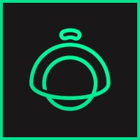

2025 até hojeSimplesHotel
Estagiário de QA
Entrei como primeiro profissional de QA e ajudei a organizar a qualidade dentro do ciclo de desenvolvimento. Trabalho com testes funcionais, exploratórios, regressivos, integração, APIs e automação com Playwright.
Resultado mais marcante: o backlog de bugs caiu de 53 para 18 cards.
Playwright, API, regressão, investigação de causa raiz